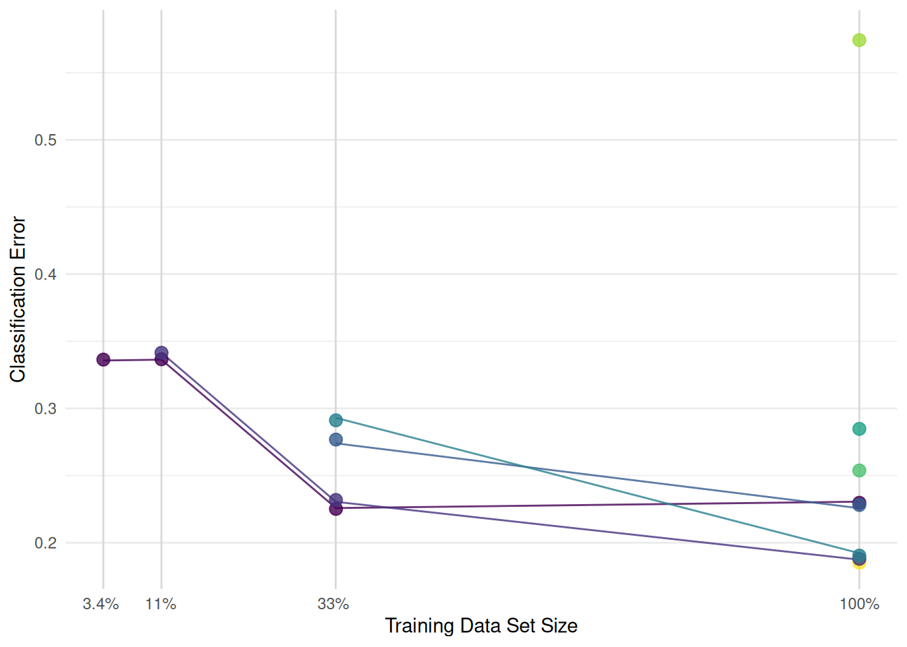

library("mlr3verse")
learner = lrn("classif.svm", id = "svm", type = "C-classification")Scope
We continue working with the Hyperband optimization algorithm (Li et al. 2018). The previous post used the number of boosting iterations of an XGBoost model as the resource. However, Hyperband is not limited to machine learning algorithms that are trained iteratively. The resource can also be the number of features, the training time of a model, or the size of the training data set. In this post, we will tune a support vector machine and use the size of the training data set as the fidelity parameter. The time to train a support vector machine and the performance increases with the size of the data set. This makes the data set size a suitable fidelity parameter for Hyperband. This is the second part of the Hyperband series. The first part can be found here Hyperband Series - Iterative Training. If you don’t know much about Hyperband, check out the first post which explains the algorithm in detail. We assume that you are already familiar with tuning in the mlr3 ecosystem. If not, you should start with the book chapter on optimization or the Hyperparameter Optimization on the Palmer Penguins Data Set post. A little knowledge about mlr3pipelines is beneficial but not necessary to understand the example.
Hyperparameter Optimization
In this post, we will optimize the hyperparameters of the support vector machine on the Sonar data set. We begin by constructing a classification machine by setting type to "C-classification".
The mlr3pipelines package features a PipeOp for subsampling.
po("subsample")PipeOp: <subsample> (not trained)
values: <frac=0.6321, stratify=FALSE, replace=FALSE>
Input channels <name [train type, predict type]>:
input [Task,Task]
Output channels <name [train type, predict type]>:
output [Task,Task]The PipeOp controls the size of the training data set with the frac parameter. We connect the PipeOp with the learner and get a GraphLearner.
graph_learner = as_learner(
po("subsample") %>>%
learner
)The graph learner subsamples and then fits a support vector machine on the data subset. The parameter set of the graph learner is a combination of the parameter sets of the PipeOp and learner.
as.data.table(graph_learner$param_set)[, .(id, lower, upper, levels)] id lower upper levels
<char> <num> <num> <list>
1: subsample.frac 0 Inf [NULL]
2: subsample.stratify NA NA TRUE,FALSE
3: subsample.replace NA NA TRUE,FALSE
4: svm.cachesize -Inf Inf [NULL]
5: svm.class.weights NA NA [NULL]
---
15: svm.nu -Inf Inf [NULL]
16: svm.scale NA NA [NULL]
17: svm.shrinking NA NA TRUE,FALSE
18: svm.tolerance 0 Inf [NULL]
19: svm.type NA NA C-classification,nu-classificationNext, we create the search space. We use TuneToken to mark which hyperparameters should be tuned. We have to prefix the hyperparameters with the id of the PipeOps. The subsample.frac is the fidelity parameter that must be tagged with "budget" in the search space. The data set size is increased from 3.7% to 100%. For the other hyperparameters, we took the search space for support vector machines from the Kuehn et al. (2018) article. This search space works for a wide range of data sets.
graph_learner$param_set$set_values(
subsample.frac = to_tune(p_dbl(3^-3, 1, tags = "budget")),
svm.kernel = to_tune(c("linear", "polynomial", "radial")),
svm.cost = to_tune(1e-4, 1e3, logscale = TRUE),
svm.gamma = to_tune(1e-4, 1e3, logscale = TRUE),
svm.tolerance = to_tune(1e-4, 2, logscale = TRUE),
svm.degree = to_tune(2, 5)
)Support vector machines often crash or never finish the training with certain hyperparameter configurations. We set a timeout of 30 seconds and a fallback learner to handle these cases.
graph_learner$encapsulate(method = "evaluate", fallback = lrn("classif.featureless"))
graph_learner$timeout = c(train = 30, predict = 30)Let’s create the tuning instance. We use the "none" terminator because Hyperband controls the termination itself.
instance = ti(
task = tsk("sonar"),
learner = graph_learner,
resampling = rsmp("cv", folds = 3),
measures = msr("classif.ce"),
terminator = trm("none")
)
instance<TuningInstanceBatchSingleCrit>
* State: Not optimized
* Objective: <ObjectiveTuningBatch:subsample.svm_on_sonar>
* Search Space:
id class lower upper nlevels
<char> <char> <num> <num> <num>
1: subsample.frac ParamDbl 0.03703704 1.0000000 Inf
2: svm.cost ParamDbl -9.21034037 6.9077553 Inf
3: svm.degree ParamInt 2.00000000 5.0000000 4
4: svm.gamma ParamDbl -9.21034037 6.9077553 Inf
5: svm.kernel ParamFct NA NA 3
6: svm.tolerance ParamDbl -9.21034037 0.6931472 Inf
* Terminator: <TerminatorNone>We load the Hyperband tuner and set eta = 3.
library("mlr3hyperband")
tuner = tnr("hyperband", eta = 3)Using eta = 3 and a lower bound of 3.7% for the data set size, results in the following schedule. Configurations with the same data set size are evaluated in parallel.
Now we are ready to start the tuning.
tuner$optimize(instance)The best model is a support vector machine with a polynomial kernel.
instance$result[, .(subsample.frac, svm.cost, svm.degree, svm.gamma, svm.kernel, svm.tolerance, classif.ce)] subsample.frac svm.cost svm.degree svm.gamma svm.kernel svm.tolerance classif.ce
<num> <num> <int> <num> <char> <num> <num>
1: 1 -6.149713 3 0.9764394 polynomial -8.985273 0.1873706The archive contains all evaluated configurations. We look at the 8 configurations that were evaluated on the complete data set. The configuration with the best classification error on the full data set was sampled in bracket 2. The classification error was estimated to be 26% on 33% of the data set and increased to 19% on the full data set (see green line in Figure 1).

Conclusion
Using the data set size as the budget parameter in Hyperband allows the tuning of machine learning models that are not trained iteratively. We have tried to keep the runtime of the example low. For your optimization, you should use cross-validation and run multiple iterations of Hyperband.
Session Information
sessioninfo::session_info(info = "packages")═ Session info ═══════════════════════════════════════════════════════════════════════════════════════════════════════
─ Packages ───────────────────────────────────────────────────────────────────────────────────────────────────────────
! package * version date (UTC) lib source
backports 1.5.0 2024-05-23 [1] CRAN (R 4.4.1)
bbotk 1.1.1 2024-10-15 [1] CRAN (R 4.4.1)
checkmate 2.3.2 2024-07-29 [1] CRAN (R 4.4.1)
P class 7.3-22 2023-05-03 [?] CRAN (R 4.4.0)
cli 3.6.3 2024-06-21 [1] CRAN (R 4.4.1)
clue 0.3-65 2023-09-23 [1] CRAN (R 4.4.1)
P cluster 2.1.6 2023-12-01 [?] CRAN (R 4.4.0)
P codetools 0.2-20 2024-03-31 [?] CRAN (R 4.4.0)
colorspace 2.1-1 2024-07-26 [1] CRAN (R 4.4.1)
crayon 1.5.3 2024-06-20 [1] CRAN (R 4.4.1)
crosstalk 1.2.1 2023-11-23 [1] CRAN (R 4.4.1)
data.table * 1.16.2 2024-10-10 [1] CRAN (R 4.4.1)
DEoptimR 1.1-3 2023-10-07 [1] CRAN (R 4.4.1)
digest 0.6.37 2024-08-19 [1] CRAN (R 4.4.1)
diptest 0.77-1 2024-04-10 [1] CRAN (R 4.4.1)
dplyr 1.1.4 2023-11-17 [1] CRAN (R 4.4.1)
evaluate 1.0.1 2024-10-10 [1] CRAN (R 4.4.1)
fansi 1.0.6 2023-12-08 [1] CRAN (R 4.4.1)
farver 2.1.2 2024-05-13 [1] CRAN (R 4.4.1)
fastmap 1.2.0 2024-05-15 [1] CRAN (R 4.4.1)
flexmix 2.3-19 2023-03-16 [1] CRAN (R 4.4.1)
fpc 2.2-13 2024-09-24 [1] CRAN (R 4.4.1)
future 1.34.0 2024-07-29 [1] CRAN (R 4.4.1)
future.apply 1.11.2 2024-03-28 [1] CRAN (R 4.4.1)
generics 0.1.3 2022-07-05 [1] CRAN (R 4.4.1)
ggplot2 * 3.5.1 2024-04-23 [1] CRAN (R 4.4.1)
globals 0.16.3 2024-03-08 [1] CRAN (R 4.4.1)
glue 1.8.0 2024-09-30 [1] CRAN (R 4.4.1)
gtable 0.3.5 2024-04-22 [1] CRAN (R 4.4.1)
htmltools * 0.5.8.1 2024-04-04 [1] CRAN (R 4.4.1)
htmlwidgets 1.6.4 2023-12-06 [1] CRAN (R 4.4.1)
jsonlite 1.8.9 2024-09-20 [1] CRAN (R 4.4.1)
kernlab 0.9-33 2024-08-13 [1] CRAN (R 4.4.1)
knitr 1.48 2024-07-07 [1] CRAN (R 4.4.1)
labeling 0.4.3 2023-08-29 [1] CRAN (R 4.4.1)
P lattice 0.22-5 2023-10-24 [?] CRAN (R 4.3.3)
lgr 0.4.4 2022-09-05 [1] CRAN (R 4.4.1)
lifecycle 1.0.4 2023-11-07 [1] CRAN (R 4.4.1)
listenv 0.9.1 2024-01-29 [1] CRAN (R 4.4.1)
magrittr 2.0.3 2022-03-30 [1] CRAN (R 4.4.1)
P MASS 7.3-61 2024-06-13 [?] CRAN (R 4.4.1)
mclust 6.1.1 2024-04-29 [1] CRAN (R 4.4.1)
mlr3 * 0.21.1 2024-10-18 [1] CRAN (R 4.4.1)
mlr3cluster 0.1.10 2024-10-03 [1] CRAN (R 4.4.1)
mlr3data 0.7.0 2023-06-29 [1] CRAN (R 4.4.1)
mlr3extralearners 0.9.0-9000 2024-10-18 [1] Github (mlr-org/mlr3extralearners@a622524)
mlr3filters 0.8.0 2024-04-10 [1] CRAN (R 4.4.1)
mlr3fselect 1.1.1.9000 2024-10-18 [1] Github (mlr-org/mlr3fselect@e917a02)
mlr3hyperband * 0.6.0 2024-06-29 [1] CRAN (R 4.4.1)
mlr3learners 0.7.0 2024-06-28 [1] CRAN (R 4.4.1)
mlr3mbo 0.2.6 2024-10-16 [1] CRAN (R 4.4.1)
mlr3measures 1.0.0 2024-09-11 [1] CRAN (R 4.4.1)
mlr3misc 0.15.1 2024-06-24 [1] CRAN (R 4.4.1)
mlr3pipelines 0.7.0 2024-09-24 [1] CRAN (R 4.4.1)
mlr3tuning * 1.0.2 2024-10-14 [1] CRAN (R 4.4.1)
mlr3tuningspaces 0.5.1 2024-06-21 [1] CRAN (R 4.4.1)
mlr3verse * 0.3.0 2024-06-30 [1] CRAN (R 4.4.1)
mlr3viz 0.9.0 2024-07-01 [1] CRAN (R 4.4.1)
mlr3website * 0.0.0.9000 2024-10-18 [1] Github (mlr-org/mlr3website@20d1ddf)
modeltools 0.2-23 2020-03-05 [1] CRAN (R 4.4.1)
munsell 0.5.1 2024-04-01 [1] CRAN (R 4.4.1)
P nnet 7.3-19 2023-05-03 [?] CRAN (R 4.3.3)
palmerpenguins 0.1.1 2022-08-15 [1] CRAN (R 4.4.1)
paradox * 1.0.1 2024-07-09 [1] CRAN (R 4.4.1)
parallelly 1.38.0 2024-07-27 [1] CRAN (R 4.4.1)
pillar 1.9.0 2023-03-22 [1] CRAN (R 4.4.1)
pkgconfig 2.0.3 2019-09-22 [1] CRAN (R 4.4.1)
prabclus 2.3-4 2024-09-24 [1] CRAN (R 4.4.1)
R6 2.5.1 2021-08-19 [1] CRAN (R 4.4.1)
Rcpp 1.0.13 2024-07-17 [1] CRAN (R 4.4.1)
reactable * 0.4.4 2023-03-12 [1] CRAN (R 4.4.1)
reactR 0.6.1 2024-09-14 [1] CRAN (R 4.4.1)
renv 1.0.11 2024-10-12 [1] CRAN (R 4.4.1)
rlang 1.1.4 2024-06-04 [1] CRAN (R 4.4.1)
rmarkdown 2.28 2024-08-17 [1] CRAN (R 4.4.1)
robustbase 0.99-4-1 2024-09-27 [1] CRAN (R 4.4.1)
scales 1.3.0 2023-11-28 [1] CRAN (R 4.4.1)
sessioninfo 1.2.2 2021-12-06 [1] CRAN (R 4.4.1)
spacefillr 0.3.3 2024-05-22 [1] CRAN (R 4.4.1)
stringi 1.8.4 2024-05-06 [1] CRAN (R 4.4.1)
tibble 3.2.1 2023-03-20 [1] CRAN (R 4.4.1)
tidyselect 1.2.1 2024-03-11 [1] CRAN (R 4.4.1)
utf8 1.2.4 2023-10-22 [1] CRAN (R 4.4.1)
uuid 1.2-1 2024-07-29 [1] CRAN (R 4.4.1)
vctrs 0.6.5 2023-12-01 [1] CRAN (R 4.4.1)
viridisLite 0.4.2 2023-05-02 [1] CRAN (R 4.4.1)
withr 3.0.1 2024-07-31 [1] CRAN (R 4.4.1)
xfun 0.48 2024-10-03 [1] CRAN (R 4.4.1)
yaml 2.3.10 2024-07-26 [1] CRAN (R 4.4.1)
[1] /home/marc/repositories/mlr3website/mlr-org/renv/library/linux-ubuntu-noble/R-4.4/x86_64-pc-linux-gnu
[2] /home/marc/.cache/R/renv/sandbox/linux-ubuntu-noble/R-4.4/x86_64-pc-linux-gnu/9a444a72
P ── Loaded and on-disk path mismatch.
──────────────────────────────────────────────────────────────────────────────────────────────────────────────────────References
Kuehn, Daniel, Philipp Probst, Janek Thomas, and Bernd Bischl. 2018. “Automatic Exploration of Machine Learning Experiments on OpenML.” https://arxiv.org/abs/1806.10961.
Li, Lisha, Kevin Jamieson, Giulia DeSalvo, Afshin Rostamizadeh, and Ameet Talwalkar. 2018. “Hyperband: A Novel Bandit-Based Approach to Hyperparameter Optimization.” Journal of Machine Learning Research 18 (185): 1–52. https://jmlr.org/papers/v18/16-558.html.